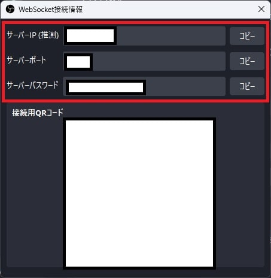

Node.js × OBS
はじめに
このページは、 Node.js × Twitch, Twitter, OBS の続きです。
Node.js から OBS の画面を操作する処理について記載していきます。以下画像右下の赤枠部分です。

その他の部分については、以下リンク先に別ページでまとめています。GitLab や Linux, Docker, nginx については記載していません。
Node.js × OBS
obs-websocket-js というライブラリを使うと Node.js から OBS の操作ができるようになります。今回は自分のチャンネルでチャンネルポイントとして実装している「1ゲト」を例にして説明してみます。
以下動画の9分54秒頃が1ゲトのチャンネルポイントを使用したときの実際の画面です。これを Node.js を使って実現しています。
①Webhook でイベントを受信
②チャットを投げる
③チャットをトリガーにローカルの Node.js から OBS を操作する
という流れになっています。このページで説明するのは③の部分のみです。①については Webhook を、②については tmi.js を参照してください。
WebSocketの設定
まず、 Node.js から OBS に接続できるようにするため、 OBS 側で WebSocket の設定を行います。
OBSを起動してツール→ WebSocket サーバー設定。
下図赤枠部分を設定（パスワードは任意）。
「接続情報を表示」ボタンを押下。

サーバーIP、サーバーポート、サーバーパスワードを控えておく。

この設定ができれば、 以下のコードで OBS に接続できるようになります。
事前に以下コマンドで obs-websocket-js をインストールしている前提です。
npm i obs-websocket-js
obs_control.jsconst {default: OBSWebSocket} = require('obs-websocket-js');
// インスタンス初期化
const obs = new OBSWebSocket();
// OBSに接続
obs.connect(
[obs_url],
[obs_password]
).catch((err) => {
console.log(err)
})
- obs_url：WebSocket 接続情報のサーバIP:サーバーポート
- obs_password：サーバーパスワード
OBS の操作
上記で WebSocket の設定ができれば、後は対応する obs-websocket-js の関数を呼び出すことで OBS を操作することができます。
関数を呼び出す際には「シーン名」と「ソース名」が必要になることが多いです。画像の赤枠部分です。

操作対象のソースは予め非表示にして隠しています。以下画像は、普段は隠している「1げと」のソースを表示状態にしたもの。

obs-websocket-js にどんな関数があるかは Requests Table of Contents を参照してください。今回使用している関数は以下の通りです。
- DuplicateSceneItem：対象のソースをコピーする関数
- SetSceneItemEnabled：ソースの表示／非表示を切り替える関数
- GetSceneItemId：対象ソースのID（OBS内部で管理されているID）を取得する関数
- GetSceneItemTransform：対象のソースの座標や角度などの情報を取得する関数
- SetSceneItemTransform：対象ソースの座標や角度などを変更する関数
- RemoveSceneItem：対象ソースを削除する関数
これらの関数を組み合わせて作ったソースコードが以下。
①シーン名（ノーマル）とソース名（1げと）を元に、後続の処理に必要な情報を取得
②①で取得した情報を元に、対象ソースのコピーを生成
③コピーしたアイテムを表示に切り替え
④コピーしたアイテムの情報を取得
⑤左方向に移動
⑥コピーを削除
という流れになっています。
コピーを生成している理由は、コピーせずに元のソースを操作すると後で移動前の状態に戻さないといけないのと、同タイミングで複数回ポイントを使用された場合でも対応できるようにするためです。
obs_control.jsconst {default: OBSWebSocket} = require('obs-websocket-js');
const {setTimeout} = require("timers/promises");
const sceneNameNormal = 'ノーマル'
// インスタンス初期化
const obs = new OBSWebSocket();
// OBSに接続
obs.connect(
[obs_url],
[obs_password]
).catch((err) => {
console.log(err)
})
async function moveObsItem(sourceName) {
// ①コピー元アイテムの情報を取得
let orgItem = await obs.call('GetSceneItemId', {
'sceneName': sceneNameNormal,
'sourceName': sourceName
});
Object.values(orgItem).forEach(async (orgItemId) => {
// ②コピー生成
let dupItem = await obs.call('DuplicateSceneItem', {
'sceneName': sceneNameNormal,
'sceneItemId': orgItemId
});
Object.values(dupItem).forEach(async (dupItemId) => {
// ③コピーしたアイテムを表示
obs.call('SetSceneItemEnabled', {
'sceneName': sceneNameNormal,
'sceneItemId': dupItemId,
'sceneItemEnabled':true
});
// ④コピーしたアイテムの情報取得
let sceneItem = await obs.call('GetSceneItemTransform', {
'sceneName': sceneNameNormal,
'sceneItemId': dupItemId,
});
// ⑤関数呼び出し（左に移動させる）
await moveHorizontal(dupItemId, sceneItem)
// ⑥生成したコピーを消す
obs.call('RemoveSceneItem', {
'sceneName': sceneNameNormal,
'sceneItemId': dupItemId,
});
});
});
}
// 左に移動させる関数
async function moveHorizontal(sceneItemId, sceneItem) {
let posX = sceneItem.sceneItemTransform.positionX
// 生成したアイテムを移動
for (let i = 1; i <= 150; i++) {
obs.call('SetSceneItemTransform', {
'sceneName': sceneNameNormal,
'sceneItemId': sceneItemId,
'sceneItemTransform': {
'positionX': (posX + i * -5)
}
});
await setTimeout(10) // 0.1秒待つ
}
}
その他の実装
Node.js と OBS の組み合わせについては以上です。その他の組み合わせについては以下リンク先を参照してください。
参考サイト